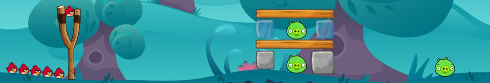
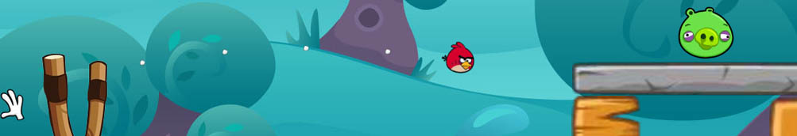

OPENGL PROJECTS
Uni Year 1
In year one at UWE Bristol I developed two projects with ASGE, the uni's barebones OpenGL engine.
Angry Birds
As my second and final year one assignment, I had to create Angry Birds. I wanted my game to be similar in style to the original Angry Birds however all happen within the one window. I started by decompiling the original Angry Birds Flash game to get assets for the pigs and birds.
Eventually I discovered some higher quality assets for these online, however I kept the original blocks from the Flash game (hence the lower quality) as they had all damage states which allowed me to create a block health system.
All character and block entities in-game had a health mechanic. Blocks had varying heath, for example, the glass/ice block would only require two hits to destroy, while the rock block would require four. Blocks also had a number of different styles, which were uniform across all types. These were long rectangle, square, and tall rectangle.
Having three different styles and three different types of block allowed for a good variety of assets in the levels - each with a maximum of four supported destruction states. All of these assets were loaded to objects which could be easily placed within the level via a basic visual level editor tool I built.
Each character also had a number of different visuals, some representative of health, while others representative of state. For example, when you launch a bird from the catapult, it will go cross-eyed! All characters blinked at random intervals during the game to give them extra life. Pig health could easily be told by its current visual, just like in the original Angry Birds game.
I also added the iconic dot trail behind each bird to show its trajectory, along with the equally iconic glove cursor for interacting with the bird in the catapult. Cartoon explosion FX was implemented upon a bird hitting a block or an entity being destroyed, along with FX of score bonuses popping up as required.
A scoreboard was implemented which displayed on the main menu where levels were selected. This is similar to the original Angry Birds game and I quite like how intuitive it is.
The game's audio was run via irrKlang, a super useful library which allowed me to layer up a number of sounds to give different sound effects to each block type and state, along with each character.
I was much more happy with the code layout in this project, it built on the class abstraction I used in PONG however didn't make it too hard to find anything you were after. My custom objects for characters, FX and other elements was also quite a neat system which could easily be expanded if I revisited the project in future.
The final project can be downloaded in multiple forms below:
PONG
For my first assignment I had to recreate the classic game of PONG. As the theme of the game was left up to us, being a fan of the terminal computers in Alien: Isolation I opted to style my game as if it was being played within one of those computers.

I took reference screenshots of the terminals and extracted the UI files from the game and decompiled them. This allowed me to get a really good look at the makeup of the "Sevastolink" terminal interface to faithfully recreate it in ASGE. I set about creating sprites in Photoshop to mimick the ones found within the original designs, which was relatively simple since it is all blocky pixel-style artwork. I created multiple states for each sprite such as active/inactive on the menu tabs. Usefully, I managed to grab the "Jixellation" font used in the original UI files which allowed me to render text through ASGE in the correct font.

For the design of the game itself outside of the menus, I experemented with a number of style choices but eventually settled on a style similar to the original blocky components of the original game, in a plain white. It complemented the green gradient background nicely and felt like it fitted in the UI perfectly.
Having access to Alien: Isolation's UI allowed me to extract the VHS static sprites used to add glitches to menus. I scripted a simple animation for these to play at points within the game which could be called in quite a neat fashion when required. Additionally, I found a nice scanline texture online which coupled with a vignette made the game look as if it was being played through an old TV monitor.

As the project was being developed for Windows systems, I opted not to use a cross-platform sound library, but instead use PlaySound() which ended up being pretty limiting although it did the job. The sounds of the ball hitting the paddle and UI glitches added to the aesthetic of the game nicely.
Looking back, I wish I had organised the codebase better - everything is far too abstracted and it's pretty hard to find what you're after. For a bigger project I think it's a nice structure, but for something so small, it's a little much!
The final project can be downloaded in multiple forms below: